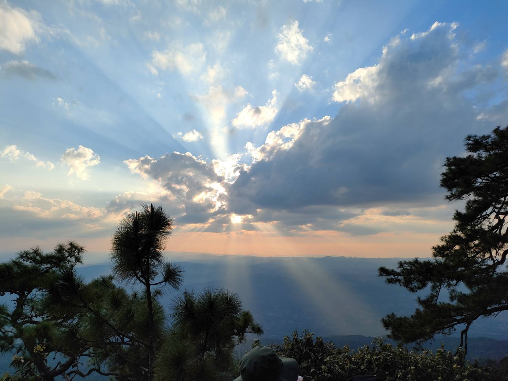

Exercise #1
Wat Phra Kaew
Wat Phra Kaewhome commonly known in English as the Temple of the Emerald Buddha and officially as Wat Phra Si Rattana Satsadaram,[a] is regarded as the most sacred Buddhist temple in Thailand. The complex consists of a number of buildings within the precincts of the Grand Palace in the historical centre of Bangkok. It houses the statue of the Emerald Buddha, which is venerated as the country's palladium.
Construction of the temple began in 1783 under the orders of Rama I, the first king of the Chakri dynasty. Since then, each successive king has been personally involved in adding, restoring and embellishing the temple during their reigns as a way of making religious merit and glorifying the dynasty. Many important state and royal ceremonies are held within the temple each year, presided by the king in person and attended by government officials. This makes the temple the nation's preeminent place of worship and a national shrine for the monarchy and the state. Throughout the years, each king has donated sacred and valuable objects to the temple, making it a treasury as well.
The temple complex comprises various buildings for specific religious purposes built in a variety of Thai architectural styles, while still adhering to the traditional principles of Thai religious architecture.
Exercise #3
Loei Province

Loei is one of the more sparsely populated provinces (changwat) of Thailand. It lies in the Isan region of upper northeastern Thailand. Neighboring provinces are (from east clockwise) Nong Khai, Udon Thani, Nong Bua Lamphu, Khon Kaen, Phetchabun, and Phitsanulok. In the north it borders Xaignabouli and Vientiane province of Laos. As of 2020, the provincial governor is Chaiwat Chuenkosum.[4] The province was allocated 225.6 million baht in the FY2019 Thailand budget.province is mountainous. The seat of provincial government, Loei, is in a fertile basin surrounded by mountains whose summits are covered by fog and abundant varied flora. The best known mountains in the province are Phu Kradueng, Phu Luang, and Phu Ruea. The Loei River, which flows through the province, is a tributary of the Mekong, which forms part of the northern boundary of the province with neighboring Laos. Phu Thap Buek, the highest mountain of the Phetchabun Range, is in the province
The mountain
- Phu Kradueng
- Phu Ruea
- Phu Suan Sai
More information
Exercise #4
Product that I link
DRIFT REACTIVE GREEN DINNERWARE
Details
Expert craftsmanship leaves its mark on the Drift Reactive Green Dinnerware collection. Stoneware forms are hand-pressed and -finished, providing a touch of organic shape. Then they're coated with a matte green water-reactive glaze that behaves beautifully when kiln-fired, surfacing a subtle crackled texture in a rich tonal mix that makes each piece unique. CB2 exclusive.
- Handmade
- Stoneware
- Matte green and water-reactive glaze
- Each piece will be unique
- Dishwasher- and microwave-safee
- Made in Portugal
More information